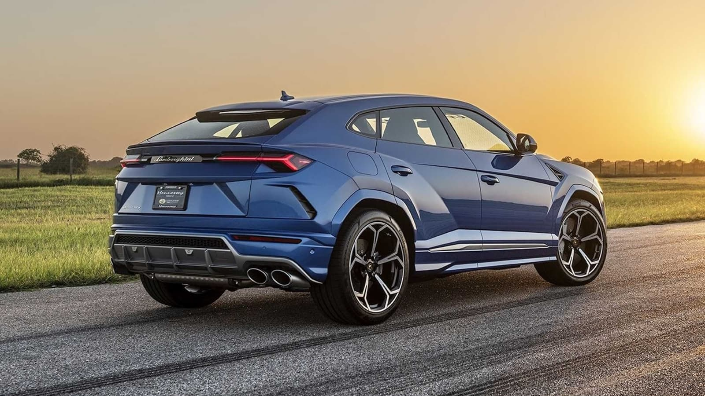
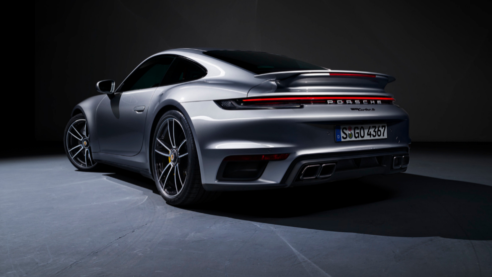

Autos existen para todos los gustos y necidades. entre estas estan marcas alemanas como porsche y lamborghini con sus autos insigia como el 911 de porsche y la urus de lamborghini
| urus | 911 |
|---|---|
|  |  |
| costo: 6,300,000 | costo: 4,068,000 |
| motor: v8 biturbo 4.0L | motor: v6 turbo 3.7L |
| HP: 650 | HP: 640 |
| 0-100km/h: 3.6 segundos | 0-100km/h: 2.8 segundos |
| velocidad max: 305km/h | velocidad max: 330km/h |
Creemos que son dos autos con propositos disitntos pero dirigido para el mismo publico. A lo que se observa en las fichas tecnicas son bastante similares a pesar de la diferencia de segmentos